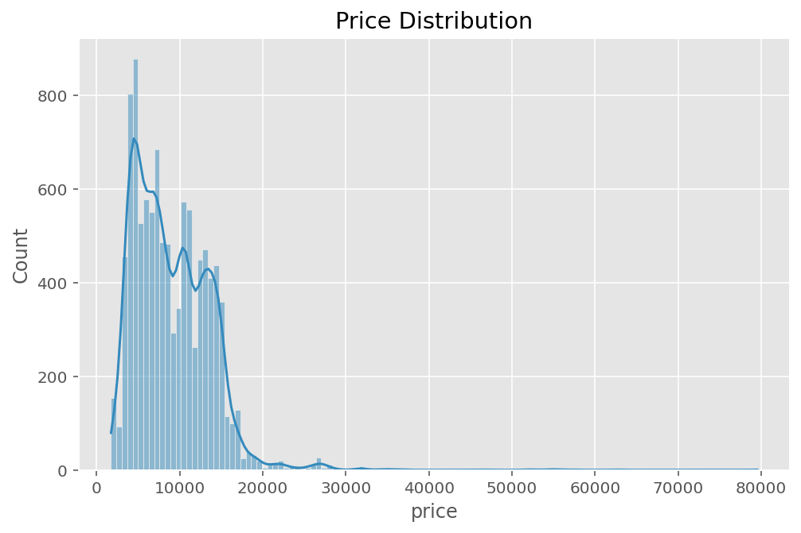
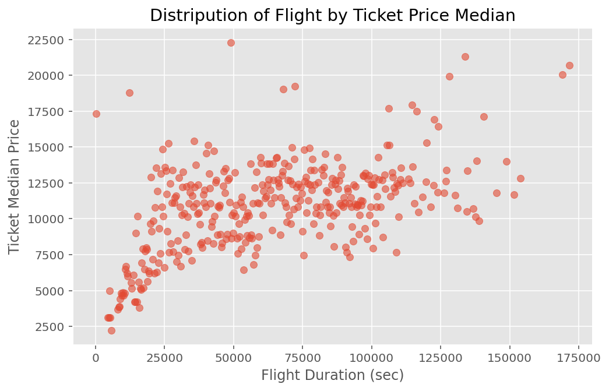
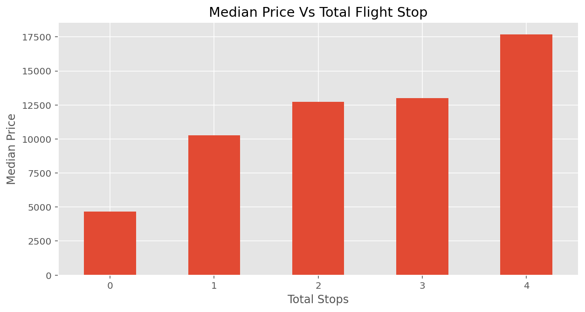
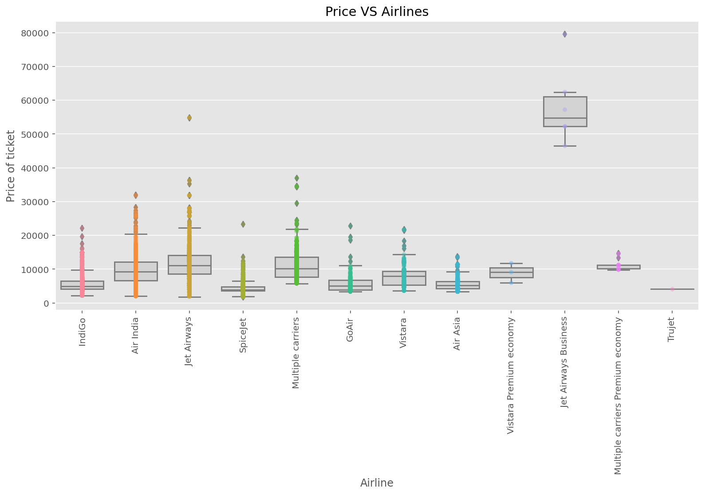
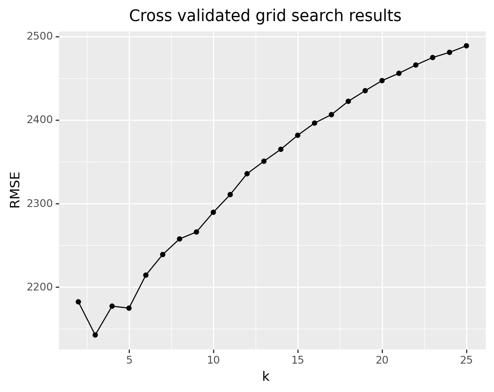
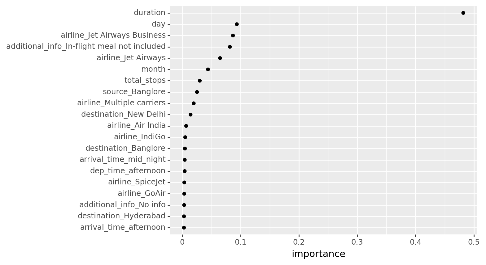
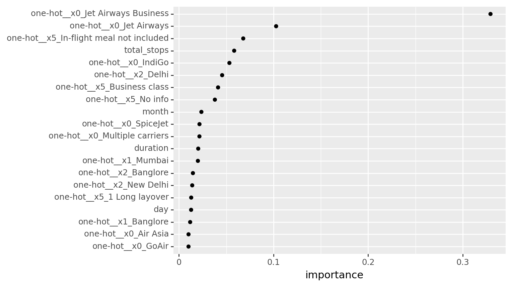

| airline | source | destination | dep_time | arrival_time | duration | total_stops | additional_info | price | month | day | |
|---|---|---|---|---|---|---|---|---|---|---|---|
| 9184 | IndiGo | Delhi | Cochin | afternoon | afternoon | 11700 | 0 | No info | 6015 | 5 | 9 |
| 4160 | Jet Airways | Delhi | Cochin | afternoon | mid_night | 51900 | 1 | In-flight meal not included | 10262 | 6 | 6 |
Flight Price ML
Flights Price Machine Learning
Description
Flight tickets price prediction using different machine learning models such as K-nearest neighbor, decision tree & linear model. ## Data The dataset contains flight tickets price from different airline companies along with other features such as the flight destination, and duration. | Feature | Description | | :—: | :—: | | Price(target) | The price of the ticket. | | Airline | The airline name. | | Source | The source from which the service begins. | | Destination | The destination where the service ends. | | Dep_Time | The time when the journey starts from the source. | | Arrival_Time | The arrival time at the destination. | | Duration | The total flight duration. | | Total_Stops | The total stops between the source and destination.| | Additional_Info| Any additional information about the flight. | |Date_of_Journey | The date of the journey. | |Route | The route taken by the flight to reach the destination.|
| Number of Entries | Number of Features |
|---|---|
| 10683 | 11 |
Data Cleaning
- Extracted Year, Month, Day form “Date_of_Juourney”
- Dropped “year” since its value is the same for all entires
- Dropped “date_of_journey”
- Converted “Duration” to seconds
- Modified “additional_info” value “No Info” to “No info”
- Dropped messing values
- Dropped duplicated entries (kept one)
- Converted “total_stops” from string to numeric
- Categorize “dep_time”and “arrival_time” (i.e. “mid_night”, “moring”, “afternoon”, “evening”)
- Dropped “route” since we will be using “total_stops”
EDA
Statistical Summarization
| duration | total_stops | price | month | day | |
|---|---|---|---|---|---|
| count | 10462.000000 | 10462.000000 | 10462.000000 | 10462.000000 | 10462.000000 |
| mean | 37786.895431 | 0.802332 | 9026.790289 | 4.701491 | 13.463200 |
| std | 30041.942724 | 0.660609 | 4624.849541 | 1.163802 | 8.467493 |
| min | 300.000000 | 0.000000 | 1759.000000 | 3.000000 | 1.000000 |
| 25% | 10200.000000 | 0.000000 | 5224.000000 | 3.000000 | 6.000000 |
| 50% | 30300.000000 | 1.000000 | 8266.000000 | 5.000000 | 12.000000 |
| 75% | 54600.000000 | 1.000000 | 12344.750000 | 6.000000 | 21.000000 |
| max | 171600.000000 | 4.000000 | 79512.000000 | 6.000000 | 27.000000 |

Insight: Price distribution is positively-skewed.
| duration | total_stops | price | month | day | |
|---|---|---|---|---|---|
| duration | 1.000000 | 0.727982 | 0.501758 | 0.004874 | -0.029810 |
| total_stops | 0.727982 | 1.000000 | 0.602013 | 0.039003 | -0.018937 |
| price | 0.501758 | 0.602013 | 1.000000 | -0.113396 | -0.159044 |
| month | 0.004874 | 0.039003 | -0.113396 | 1.000000 | -0.038331 |
| day | -0.029810 | -0.018937 | -0.159044 | -0.038331 | 1.000000 |
Insight: Price is highly correlated with total stops and moderately correlated with duration.

Insight: As the durations increase, the median price increases.

Insight: Median price increase as the total stops increase.

Insight: Jet Airways Business has the heighest median price.
Machine Learning
Linear Regression
KNN
Model Steps: - Create train/test split - Separate features from labels and only use numeric features - Features engineering
- Create grid of hyperparameter values - 10 fold CV object - Defind a loss function (RMSE) - KNN model object - Tune the model using grid search
Optimal hyperparameter
Best K value: 3
Best KNN RMSE: 2142.801354153572

<ggplot: (148843624569)>Decision Tree
Model Steps: - Create train/test split - Separate features from labels and only use numeric features - Features engineering
- Create grid of hyperparameter values - 10 fold CV object - Defind a loss function (RMSE) - Decision tree model object - Tune the model using grid search
Optimal hyperparameter
ccp_alpha: 1e-10
max_depth: 15
min_samples_split: 21
Best Decision Tree cross validated RMSE: 1843.72
<ggplot: (148843681277)>Duration has is the important feature
Gradient Boosting
Gradient Boosting RMSE: 1669.3974306455425
Gradient Boosting random search RMSE: 1614.05097475437
Optimal hyperparameter
xgb_mod__n_estimators: 2500
xgb_mod__learning_rate: 0.01
xgb_mod__max_depth: 9
xgb_mod__min_child_weight: 1

<ggplot: (148716878695)>